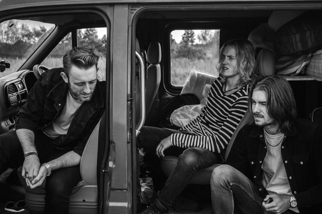
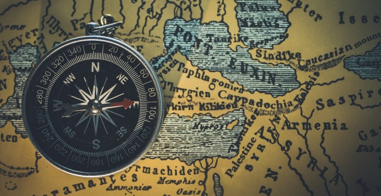
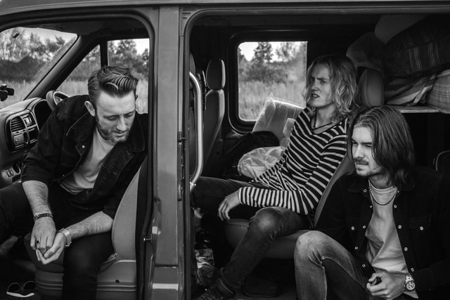
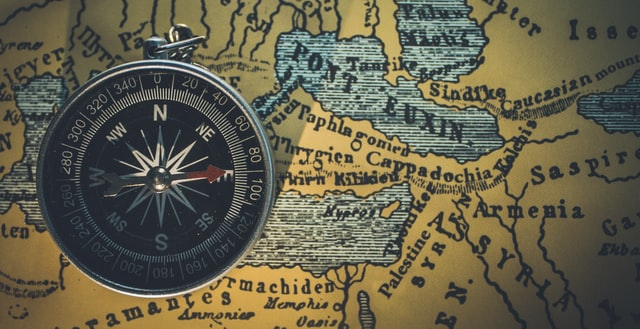

Send us a message. We'd love to hear from you!
DH & Co.
A photography website design by @DH
About
Photography is the art of capturing a moment in time. It is powerful enough to not only remind you of an event or detail, but can bring you right back to the feelings, sounds, and even smells of the moment. It exploits vulnerabilities of the human visual perception and can make us experience emotions that move us and compel us to do things that we otherwise would not even think of.


Services
Our team provides a vast array of photographic services from editing to printing, framing to advertising, and much more.
Impeccable Editing
Crisp Photography
Top Notch Customer Service
We work hard to make sure that all of your photography needs are met and that you leave with a smile on your face.
Gallery
Our photographs display artistry across multiple domains.
TRAVEL PHOTOGRAPHY
Involves the documentation of an area's landscape, people, cultures, customs and history. It gives a taste of excitement to all those who see it.
 




FINE-ART PHOTOGRAPHY
Photography created in line with the vision of the photographer as artist, using photography as a medium for creative expression. The goal of fine-art photography is to express an idea, a message, or an emotion.


ARCHITECTORIAL PHOTOGRAPHY
The photographing of buildings and similar structures that are both aesthetically pleasing and accurate representations of their subjects.


GET IN TOUCH
© Untitled. All rights reserved. Design influence: HTML5 UP @AJLKN.